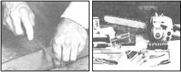
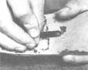
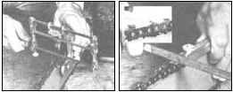
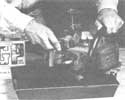
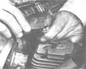
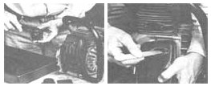
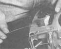
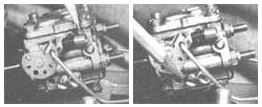
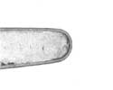

A few minutes of your time and a little attention to detail are all it takes to ...
If you're a chain saw owner, you're probably well aware of your machine's enormous potential for chewing through raw timber. But perhaps because modern saws are so efficient, and tend to mesmerize their operators into believing that everything's hunky-dory as they drone away, many people tend to take such tools for granted ... and eventually pay the penalty for neglect in the form of a hefty bill at the repair shop.
The majority of today's chain saw users are occasional " lumberjacks" -cutting and bucking logs only when fuel is needed for the family woodstove-and therefore tend to forget how much punishment a saw can suffer over the course of just one season. Furthermore, some owners may feel intimidated by what appears to be an intricate piece of machinery ... and perhaps don't realize that most maintenance chores need not involve intruding on the "delicate" parts of the tool at all.
The fact of the matter is, though, that many chain saw owners could do their equipment a world of good if they only took the time to perform a dozen or so basic checks at regular intervals. Of course, the precision work-that involving the innards of the powerplant and its accessories-is best left to the experienced ... but a machine that's been routinely inspected and serviced is much less likely to need major repairs than is one that's been neglected or abused.
IF IT AIN'T BROKE, FIX IT ANYWAY
As the term suggests, preventive maintenance requires that a small investment of time and money be made periodically to avoid a greater expense down the road. This is especially true of high-revving, alloy-construction chain saws. Because they're aircooled, usually are used under deplorable conditions, and are often asked to perform beyond their limits, the gasoline-powered cutters demand more than just token attention.
Ideally, you should service your saw before it starts to act up ... but, short of that, you can at least be receptive to the warning signs that'll let you know your machine's ready for a going-over. Difficult starting is probably the most common (and unmistakable) problem, and this can be attributed to anything from stale fuel to a bad spark plug On the other hand, a loss of power at full throttle could indicate a dirty air filter or a clogged exhaust chamber. And even with the engine running perfectly, you may find yourself really laying into a log to get it cut ... with only a chattering chain and an overheated bar to show for your efforts. If this is the case, it's time to sharpen the tool's teeth, before their dullness can cause further complications.
DO IT BY THE BOOK
Whether you've had a good deal of mechanical experience or are a neophyte in the nuts-and-bolts department, you'll find the chain saw operator's manual to be an invaluable aid. Besides telling you how to prepare and use the tool safely, it should identify the basic owner - serviceable parts and give the critical specifications for each maintenance step. If your manual doesn't include this data, see if a local dealer can provide some information on your particular unit ... and when you're ready for a new saw, consider the quality of the literature as well as that of the machine!
Like all well-built pieces of equipment, a chain saw requires specific maintenance tools (and often comes with a small kit that includes most of the "specialty" items needed for a basic tune-up). Generally, you'll be using the following implements: a socket-type spark plug wrench ... several sizes of flat-bladed and Phillips screwdrivers ... a combination wrench (to fit the sprocket-cover nuts) ... a set of feeler gauges (to adjust the spark plug gap and the points, if your engine has conventional ignition) ... an assortment of allen wrenches ... a pair of needle-nosed pliers ... a wire brush ... a nylon brush (or a toothbrush) ... some tongue depressors or narrow wooden sticks ... a thin, stiff length of wire . . . a grease gun to fit the nose sprocket (if your bar has one) ... a chain saw file (not a tapered or rat-tail unit) that's compatible with your particular chain ... a flat or triangular file ... and a jointer or depth gauge to set the chain rakers.
Naturally, it never hurts to have more than a basic set of tools, and you'll probably find your work much easier if you have an assortment of 1/4"- and 3/8"-drive socket wrenches, a pair of Vise-Grips, a set of small combination or ignition wrenches, and, perhaps, a file guide or a clampon chain sharpener.
Part of being a good mechanic is, of course, using your tools properly. Therefore, though ViseGrips are a truly wonderful invention, they shouldn't be used in place of a socket or end wrench. Likewise, never use a flat-bladed screwdriver to deal with a Phillips-head or allen screw, no matter how well it appears to fit. And, though it's a must to keep all fasteners tight, bear in mind that overtightening is dangerous because it can (and usually does, when you're dealing with alloy engine cases) result in stripped threads. Last but not least, make certain you keep the saw's parts in some type of order as you remove them from the main assembly. Draw a picture or make a note if that's what it takes, but be sure you can put the covers, bolts, clips, etc. back where you found them when it's time to wrap everything up (you'd be surprised how weak your memory can suddenly become when you're working on unfamiliar equipment).
A 12-POINT ONCE-OVER
The dozen trouble spots we've chosen to detail here should cover most of the things that might ail your saw as a result of normal use. Once the equipment's been cleaned, lubricated, and adjusted, there's no reason why it shouldn't perform as well as it did when it was new ... if all the components are in good condition. Be sure to take your time as you work and to consult your operator's manual for specific information on your particular machine. Then again, don't be afraid to recognize your limits. If you feel a certain operation is beyond your ken, take the saw to someone who's familiar with it and watch him or her make the adjustment so you'll be able to do it yourself the next time. And when you get the job completed, remember the most important point of all: You, the operator, are ultimately responsible for how safely your chain saw is used.
EDITOR'S NOTE: Chainsaw Savvy by Neil Soderstrom (a guide to chain saw maintenance, sharpening, and safe use) is available for $9.95-plus $1.25 shipping and handling -from Mother's Bookshelf, 105 Stoney Mountain Road, Hendersonville, North Carolina 28791.
[1] GUIDE-BAR GROOVE: The channel that guides the chain along the bar can become clogged with sawdust and nicked with use. Remove the drive-case cover, chain, and bar, then clean the groove with a small screwdriver or a piece of wire, Finally, file any nicks flat, stroking perpendicularly to the bar's flanks.
[2] OIL PORTS: The two oil-inlet orifices at the rear of the bar also are subject to clogging. Clean them out with a small wire before you remount the bar.
[3] POWER SPROCKET: The drive sprocket on the centrifugal clutch will wear out in time, although usually only after you've gone through several chains. Check its teeth for damage or uneven wear, and replace it if necessary. (If your saw has a clutch bearing, you can lubricate it at this time, but don't overdo it.)
[4] CHAIN: If the chain chatters, produces sawdust rather than chips, or makes curved cuts, it needs sharpening. While the chain's off the bar, inspect its tie straps, rivets, and drive links for signs of excessive wear or damage, then remount the bar and chain when you're ready for filing. The bar should be turned over after every couple of sharpening sessions (this doesn't apply to the newer ''antikick'' bars that have distinctive prow-shaped noses), and the chain should be tensioned until snug, yet able to be turned by hand. To lubricate the chain, wash it in a shallow pan of solvent to remove dirt and tar, then soak it for 12 hours in a bath of fresh, warm 10-weight motor oil before you reinstall it, (If your bar has a nose sprocket, be sure to grease that also.) The teeth should be sharpened with a round chain saw file of a size compatible with your chain (7/32" and 3/16" are the most common). Chipper chains-the most popular design-are filed horizontally and at a 350 angle to the teeth (in a forward direction) to duplicate the original cuts, Other types of chains-the semichisel and chisel designs-should be dressed at angles 100 below horizontal and 300, respectively. As an alternative to freehand filing, you might want to consider using either a filing guide or a filing jig, both of which are fairly inexpensive accessories. The rakers-those small rounded nubs ahead of each cutter-serve as depth gauges for the teeth and are generally set about .025" below the top of each cutting edge. In use, the teeth wear down . . . hence, the rakers must be filed accordingly. A jointer, or depth gauge, made to match your particular chain will allow you to flat-file the top of each raker accurately then you can round off their forward corners to complete the job.
[5] COOLING FINS: Since a chain saw engine is air-cooled, it's essential that grime, sawdust, and filth in general not be allowed to build up around the cylinder or on the flywheel vanes. By removing the starter housing, drive-case cover, carburetor cover, and cylinder housing, you'll be able to get to the engine case and the cooling fins. Clean these parts with kerosene or degreasing solvent (don't use gasoline!), a small brush, and a narrow wooden blade (to get at tight places). Be sure to keep the carburetor choke closed during this operation to prevent dirt from entering the throat if you've removed the air cleaner, Also, clean off any air-inlet or exhaust screens that might be built into the engine covers.
[6] SPARK PLUG AND IGNITION: A two-cycle engine, with its gasoline-and-oil fuel mixture, is more likely to foul spark plugs than is a four stroker. Use a plug or socket wrench to remove the spark plug, then wire-brush it clean and reset the gap-with a feeler or a wire gauge-to the recommended limit (usually .020" or .025"). The electrodes at the tip of the plug should be an even dark gray-to-brown color . . . if they're not, it indicates one of any number of problems-from a poor fuel mix to an air leak-that you should refer to your service shop. When you replace the plug in the cylinder, tighten it moderately but not excessively. And if you purchase a new plug, be sure you get the correct type for your saw. Some newer chain saws utilize electronic ignition, which is maintenance-free. If your older model has breaker points, you'd probably be better off letting your repair shop do the adjustments.
[7] EXHAUST SYSTEM: The muffler, spark screen, and exhaust port can, in time, become clogged with residue from the engine's exhaust. To remedy this situation, remove the screen and the muffler (many manufacturers use locking clips that must be bent back before you can loosen the fasteners), and clean them with a brush and solvent. To service the exhaust port, first bring the piston to the top of its stroke (this is easily done with the spark plug removed . . . just pull the starter gradually until the piston is in position), then scrape away at the buildup around the port with solvent and a wooden (not metal) stick, When you reassemble the parts, be certain to use the locking clips if your saw was equipped with them.
[8] AIR FILTER: Remove the air-filter box from the mouth of the carburetor and wash it in solvent (or soap and water, if it's a plastic element). If you can, blow it clean with compressed air. You also might want to take the time to clean the carburetor body and the area around it (with the choke closed, of course), and to check it the throttle and choke linkages are operating their respective butterfly valves correctly (just look down the throat of the carburetor while working them).
[9] FUEL FILTER: Most saws have a small filter screen attached to the end of the fuel-pickup line within the tank, Fish the end of the line out with a piece of bent wire, then pull the screen and its housing off the fuel line. Brush it clean with solvent, and replace it. Now's also the time to check the fuel-cap gasket and the vent, and to drain out the fuel (if it's more than a month or two old) and replace it with a fresh mixture, blended exactly to your manufacturer's fuel/oil ratio specifications
[10] CARBURETOR: Almost all chain saw carburetors have three adjustment screws: a low-speed mixture needle (labeled L), a high-speed mixture needle (labeled H), and an idle-speed screw (I or T) that is larger than the others and pushes against the carburetor linkage, rather than terminating within the carb body, Generally, you should have to deal with only the idle-speed screw . . . if the engine idles either too slowly and stalls, or so fast that it drives the chain. (The engine should idle evenly with the chain stationary.) If you have to adjust the mixture screws, slowly turn them in (clockwise) so that they seat very lightly, then back them off (counterclockwise) one turn. Now, if the engine stalls under acceleration, the lowspeed needle should be opened slightly. If it races at idle (with the idle-speed screw properly set), the highspeed needle needs to be opened. Racing indicates a too-lean mixture that can damage the engine. Smoking signifies richness, and the needle(s) should be turned down slightly. If you're not quite sure what to listen or look for, have the mixture settings adjusted by someone familiar with the saw.
[11] AUTOMATIC OILER: Modern chain saws have automatic oilers that keep the chain lubricated while the tool is in use. Check and clean the oil-pickup filter (similar to the fuel pickup, but located within the oil reservoir), then test the system by pointing the chain bar at a sheet of cardboard and revving the engine . . . oil spatters should appear on your ''target''
[12] STARTING MECHANISM: The chain saw's recoil starter is a simple device, but it needs occasional attention. Pull the rope out to its full length and inspect it for signs of fraying, then, to check the recoil action, let it draw itself back in. If the cord is damaged or binds in transit, you'll have to remove the starter housing. Binding can be cured by cleaning the mechanism and housing of any accumulated grit, and lubricating the recoil spring with a lightweight oil. Replacing the rope isn't difficult, but be careful not to unleash the wound spring beneath the pulley. Wear eye protection, and release the spring slowly by unwrapping the cord.
|
 |
 |
|
|
 |
 |
 |
|
 |
|
 |
|
 |
 |
|